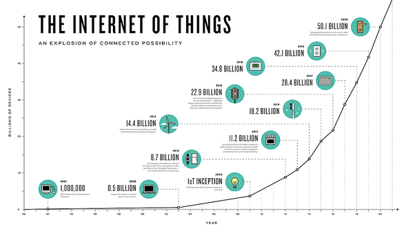
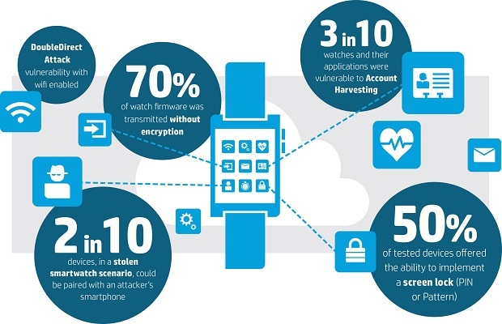

Connected Technology Is Rapidly Increasing
In our society, technology has progressed at a staggering rate. With this advancement a new form of
technology has emerged, called the 'Internet Of Things' (IoT). The IoT is a new breed of technology where
everything is connected to the internet and each other. These devices include those used in home automation, entertainment
devices, and even light bulbs. CNBC predicts that by 2020 there will be 50 billion connected devices.
While the velocity of these devices being developed keeps increasing. It appears that the security behind them has been lacking behind.

Image Credit: (Quora)
With IoT devices being always connected to the internet, that means that the data that they collect is also always being uploaded
online. If you take into account the amount of data that is also being generated, this means that there is a constant supply
of information that is constantly being stream and that can be intercepted by opportunistic hackers at any time.
 Image Credit: (netimperative)
The (lack of) Security In New Devices
A great example of the security and privacy risk that is posed with this technology is with the increased
popularity in smartwatches. These watches, usually connected to a personal smartphone allows a convenient method of accessing applications, such as texting
and NFC payments, all without having to actually use a phone.
However with this convenience comes a substantial drawback
in regards to security. In a report published by HP
it was claimed that only 50% of devices offered a method of screen locking and a shocking 70% of smartwatches transmitted
data without encryption. This means that if someone was standing nearby and using a device to listen for these transmissions,
they would be able to intercept and steal this data without the user ever knowing. This lack of security implementation for IoT devices
opens up a higher chance for personal data to be stolen and the increased possibility of identity theft.
How To Protect Your Data
With the constant development of technology pushing for an interconnected world, our privacy and personal data should be one of our largest
concerns when looking at using technology built upon the Internet of Things. While it may seem that a lot of data can be at risk, there are many steps that
can be taken to reduce the chance of being subject to data theft. An article published by gearbrain
goes into detail about how to protect data not only on a smart phone, but home networks and smart cars as well.
Sources:
An Internet Of Things That Will Number Ten Billions
Report: 77% of companies say IoT has created 'significant' security gaps
Internet of Things Security Study: Smartwatches